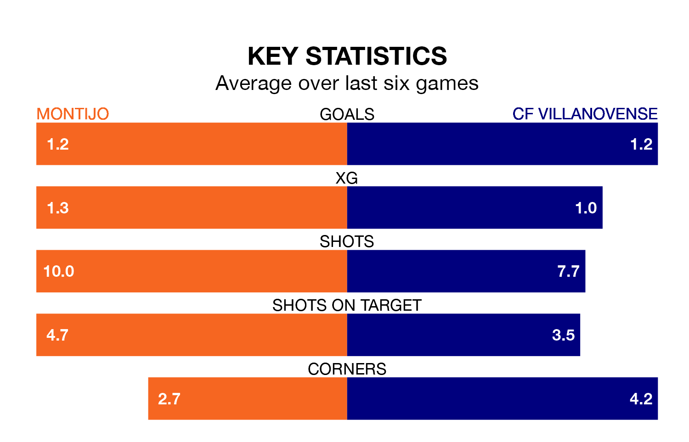

Montijo host CF Villanovense on Sunday at the Estadio Municipal Emilio Macarro Rodriguez in Segunda División RFEF Group 5.
In their last league match, on January 28, Montijo lost to CDA Navalcarnero 4-2 away, with their goal scored by (two).
Villanovense also lost, 2-1 at home against Gimnástica Segoviana CF.
Montijo are bottom of the table after 20 games, of which they have won four and drawn four, earning 16 points.
Villanovense are eight places ahead of the hosts in 10th, with seven wins and five draws putting them on 26 points.
In the last 10 years, Montijo and Villanovense have played each other on six occasions. Montijo won two of them, Villanovense three, and they drew once.
On average, Montijo scored 1.0 goal and Villanovense 1.7 in those matches.
Their last meeting was on September 24, when Villanovense won 2-1 at home.
With 18 goals in 20 games so far this season, Montijo are scoring at below the league average rate with 0.9 goals per game. And they are conceding more than average, letting in 30 goals at a rate of 1.5 per game.
The away team are also below average scorers, with 1.0 goal per game, compared to a league average of 1.1. They have conceded 0.9 goals per game.
Montijo are in mixed form in Segunda División RFEF Group 5, with two wins and a draw from their last six games.
With three wins and three losses over that period, Villanovense's form is slightly better – they have taken nine points from 18, compared to the home side's seven.
Updated: 13:20 (UTC), 29/01/24